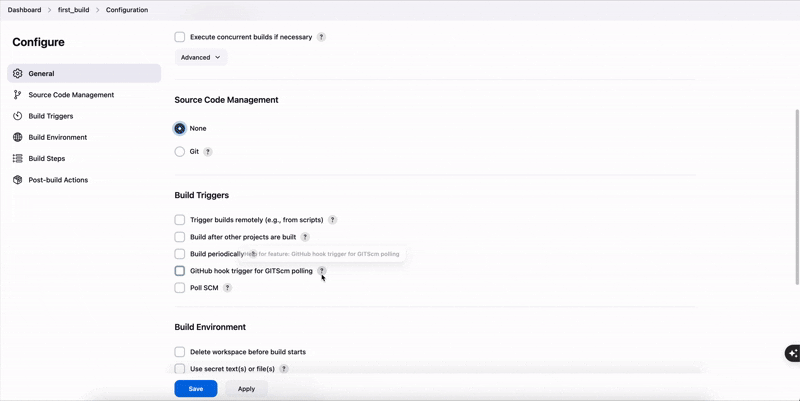

Jenkins
Automation platform that lets you build, test, and deploy automations using pipelines.
Jenkins Infrastructure
- Master Server = Controls the pipelines & schedules builds
- Agents/Minions Servers = Run the builds
Jenkins Build Types
- Freestyle Builds - shell scripts that are run on servers based on specific events.
- Pipeline Builds - Use Jenkins files to define declaritively on how to deploy the build in different stages.
Jenkins GUI
- Manage Jenkins: This contains all of the settings that you need for your Jenins instance such as plugins, global settings, etc.
System Configuration/Configure SystemSystem Configuration/Manage PluginsSystem Configuration/Manage Nodes & Cloud: This is where you setup agentsSecurity/Manage Credentials: This where you storeSSH keysorAPI tokensTools and Actions/Prepare for Shutdown: You need to use this when you are performing and upgrade or maintanence if you just shutdown the server without doing this step then you will interrupt jobs that are running.
Setting up Freestyle Jenkins Projects
-
Go to the Jenkins Dashboard then click on New Item. The two most popular types of projects are
freestyleandpipelines -
Pick the type of job and give it a name. Make sure to not to put spaces in the name
-
From the build options:
-
Source Code Managementis usually alwaysGitand Jenkins will pull that repo that is specified here. You also will mention any branches if you need specific ones. -
Then we have
Build Triggers: You would usually using GitHub webhooks but you need to make sure the firewall or port is open on the Jenkins server so that it can work with the webhook.Build Periodicallyis used to build jobs on a schedule using cron jobs. -
Build Enviornments: Good to select the 'Delete Workspace' option to clean up any artifacts from previous runs
-
-
Build:- Most common option is
Execute Shell
- Most common option is
-
Post-Build: Like email notifications -
After clicking and saving on the build - from the job dashboard you can click
Build Now

-
Click on
Configurefrom the Build Homepage to change any settings -
Enviornment Variable:- To see what env variables your build has access to go to
Configureon the build and then scroll to Build Steps and check theExecute Shellstep and click on "See the list of available environment variables" Main Enviornment Variables: -BUILD_ID: Gives you the current build ID and you can use this for docker images -BUILD_URL- To see use enviornment variables
${VAR_NAME}in your shell script
- To see what env variables your build has access to go to
-
Reading Console Output:
- Any line in the console that is prefixed with a plus sign
+means that is a command that is being run
- Any line in the console that is prefixed with a plus sign
-
Workspace: If there are files that are created and managed by your build they will show up in Jenkins on the Project homepage under the Workspace folder